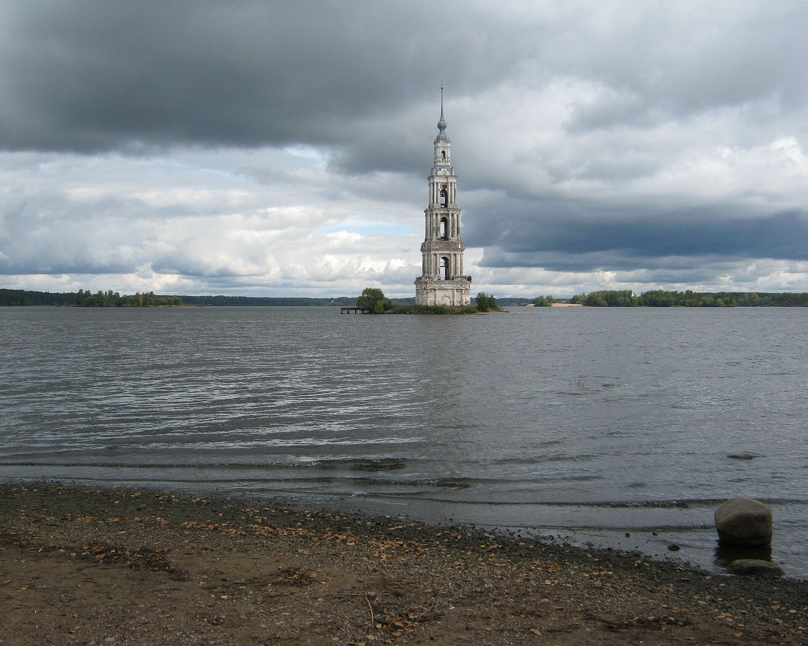

ТОМ II · ЛИСТ Q · 05 / 06
ИСЧЕЗНУВШАЯ ДЕРЕВНЯ
Затопленные города, несосчитанные могилы и деревни, которые просто пустеют
Деревни уходят с карты двумя путями: их затапливает государство или оттуда уезжают люди. Рыбинское водохранилище накрыло город и сотни деревень; перепись фиксирует тысячи деревень вовсе без жителей. Лист ставит их рядом и говорит, что известно и что не подтверждено о кладбищах в зоне затопления.
Постановление о переселении 1936; заполнение водохранилища 1941–1947; перепись 2002–2010 · Рыбинское водохранилище (Ярославская, Вологодская и Тверская области); Российская Федерация (перепись) · Советская инфраструктура и сельское обезлюдение
Q / 01
Вода над деревней
Проектная статья Е. А. Филатовой 2026 года приводит контекстные цифры по Рыбинскому и Угличскому водохранилищам на Верхней Волге: затоплено более 300 000 гектаров полей, лугов и лесов, более сорока церквей, три монастыря, около семисот сёл и деревень и шесть городов, среди них Молога и Корчева.
Статья предлагает снизить уровень водохранилища, чтобы восстановить поселения, то есть отстаивает позицию. В прочитанной части цифры без первичных ссылок, а о могилах и кладбищах цифр нет.

Q / 02
Переселение по постановлению
Статья И. Ципилевой о Череповецком районе сообщает, что переселение шло по постановлению ВЦИК и СНК СССР от 1 августа 1936 года и что из зоны затопления выселили жителей около семисот деревень и хуторов.
Виден только зачин статьи, а год её первой публикации не указан. Постановление — датированный документ, который читатель может найти. Собственный предмет статьи — один район.



Q / 03
Кладбища под водой
Новостной материал РАПСИ от 13 июля 2026 года сообщает, что санитарная подготовка ложа водохранилища должна была включать перенос кладбищ, что на деле в 1930–1940-е годы перенесли лишь отдельные погосты и что многие кладбища мологского края ушли под воду вместе с сёлами. Добавлено, что прежние нормы проектирования требовали закрыть и перенести кладбища до заполнения и что оценки числа переселённых колеблются от 100 000 до 130 000 и что историки спорят о методике учёта.
Это не подтверждено. Страница под заголовком «Русская Атлантида: право затопленных городов» автора не называет; она прочитана целиком 16 ноября 2026 года по машинному пересказу. Для утверждения о кладбищах и для диапазона от 100 000 до 130 000 она не называет ни архива, ни постановления, ни историка, ни документа; закон о погребении 1996 года и санитарные правила для водохранилищ приведены только как действующее регулирование, а члены мологского землячества, рассказывающие о том, что видели на осушенном дне, не названы по именам. Лист считает утверждение направлением поиска: перенос захоронений в зоне затопления должен отражаться в архивных делах, а в источниках, прочитанных для листа, его нет.
Второй, личный пласт: в воспоминании переселённой жительницы, Р. П. Скородумовой-Чеглоковой, сказано, что даже свежие кладбищенские захоронения предлагали перевезти всем желающим. Это одно воспоминание, прочитанное только в выдержке поисковика. Оно позволяет думать, что перенос могилы был возможен по просьбе; сколько могил перенесли и дошло ли предложение до всех, оно не говорит.
Q / 04 · ПАМЯТЬ О ЗАТОПЛЕННЫХ
Почему затопленные деревни вспомнили поздно
Галина Янковская, историк, в 2021 году написала о том, как сегодня вспоминают негативные последствия советских и российских гидроэнергетических проектов: затопленные земли, массовые переселения и утрату историко-культурного наследия. Она говорит, что с начала 2000-х годов в ряде регионов сложилась новая мемориальная культура: личный активизм, памятные знаки на затопленных территориях и местах храмов, поддержка государственных структур, благотворительных фондов и религиозных организаций, туризм вокруг затопленных мест, современные художники и интернет-площадки, где участвуют непрофессиональные историки, свидетели и их потомки.
Её объяснение долгого молчания опирается на несколько причин. Для поколения, пережившего создание Рыбинского водохранилища, война отодвинула переселение на второй план; масштаб строек порождал «электрическое возвышенное» и гордость новыми морями, а некоторые дети вспоминают радость от долгожданного моря; приехавшим строителям затопляемая старина была чужой; многие архивные дела о водохранилищах были закрыты до 2010-х годов. Это её выводы по мемуарам и открытым источникам, а статья о том, как прошлое вспоминают сейчас, а не о том, сколько деревень и могил потеряно; здесь она прочитана по аннотации, заключению и окружающим местам, а не по каждому названному ею случаю.
Q / 05 · СЧЁТ И ДЕНЬ ПАМЯТИ
663 селения и молитва у воды: журнальный репортаж 2009 года
Материал Ивана Якубова 2009 года в деловом журнале «Прямые инвестиции» — журналистика, а не исследование, и для цифр он не называет архива. Там сказано, что Рыбинское водохранилище стало наполняться в апреле 1941 года и наполнялось до 1947-го, а до затопления из 663 селений и города Мологи переселили 130 тысяч человек. Добавлено, что города Мышкин, Весьегонск, Углич и Калязин были частично подтоплены и что несколько монастырей, среди них Леушинский, погибли вместе с «сотнями храмов, деревень, кладбищ», но числа могил не дано. Об условиях переселения сказано, что владельцы домов с износом свыше 60% имели от десяти дней до месяца, чтобы уехать с небольшой компенсацией и ссудой, а более крепкие дома разбирали и перевозили; приведённые жалобы граждан касаются брёвен, лежащих на берегу, и домов, поставленных без фундаментов (с. 108).
663 селения отличаются от «около семисот» других источников этого листа, и лист не выбирает между ними: счёта разные и без ссылок. Вторая половина материала посвящена памяти. В ней сказано, что в 1999 году паломники с Леушинского подворья в Петербурге поставили деревянный крест в Мяксе, ближайшем к затопленной обители селе, и с тех пор молитвенные «стояния» проходят там и на других берегах в престольный праздник обители 7 июля, а 14 апреля отмечается как день памяти Мологи (с. 108). Это утверждения организаторов и автора, прочитанные один раз; они показывают практику 2000-х годов, а не более древнюю.
Q / 06
Два способа исчезнуть деревне
| Источник | Причина | Приведённая цифра | Статус |
|---|---|---|---|
| Филатова, 2026 | Затопление, Рыбинское и Угличское водохранилища | около 700 сёл и деревень | Проектная статья; первичной ссылки не видно |
| Ципилева, б. г. | Затопление, постановление о переселении 1936 года | около 700 деревень и хуторов | Только зачин, выдержка |
| Якубов, 2009 | Затопление, Рыбинское водохранилище | 663 населённых пункта и город Молога; переселено 130 000 | Журнальный очерк; ссылок нет |
| РАПСИ, 2026 | Затопление; Молога и кладбища | 100 000–130 000 переселённых (спорно) | Не подтверждено; страница прочитана, записи не названы |
| ТАСС о переписи 2010 | Опустение, не затопление | 19 400 деревень без жителей | Сообщение о докладе по переписи; на 48% больше, чем при прошлой переписи |
Песня
Along the wild steppes of Transbaikalia
Оригинал
Каторжная песня, известная во многих вариантах. Печатаемый текст следует дореволюционному песеннику; ленинградский сборник 1950 года указан как поздняя записанная форма песни. Сюжет — возвращение: беглец переходит Байкал, встречает мать и узнаёт, что отец умер, а брат в Сибири. Могила не показана, о ней сообщается в речи.
Песня связана с листами о дорогах, исчезнувших деревнях и пустом доме, но не является похоронным текстом. Она показывает, как могила входит в семейный рассказ в момент возвращения. «Правда», за которую страдал арестант, — литературно-политическая формула, а не документально установленное обвинение.
- Забайкалье
- Край к востоку от Байкала.
- тайга
- Густой сибирский лес.
- курень
- Хата, жилище; в сибирском и казачьем употреблении — дом.
- каторга
- Каторжные работы; «тюрьма» и кандалы в песне принадлежат этому миру.
Источник «По диким степям Забайкалья», № 225 в «Русских народных песнях, записанных в Ленинградской области в 1931–1949 гг.» (под ред. В. А. Кравчинской и П. Г. Ширяевой, Л.—М., 1950), с. 149. Текст также в версии песенника 1908 года на Викитеке. · открыть источник
Права Общественное достояние. Народная песня, издававшаяся в лубочных песенниках с 1908 по 1917 год; текст традиционный, общественное достояние. Издание 1950 года — современная запись; атлас использовал дореволюционную версию 1908 года, а текст 1950 года — только для сверки.
Аппарат источники · связанные листы · термины
Источники этого листа
- filatova2026 Филатова, Е. А. — Градостроительная ревитализация затопленных территорий Верхнего Поволжья (2026)
- tsipileva2014 Ципилева, И. — О переселении жителей Череповецкого района из зоны затопления в связи с образованием Рыбинского водохранилища (n.d.)
- rapsi2026 РАПСИ (rapsinews.ru); автор на странице не назван — Русская Атлантида: право затопленных городов (2026)
- tass2011-census ТАСС (Итар-ТАСС) — Население России составляет 142 857 000 человек, средний возраст 39 лет (сообщение об итогах переписи 2010 года) (2011)
- skorodumova-mariinka Skorodumova-Cheglokova, R. P. — Все понимали, что переезд неизбежен (n.d.)
- yankovskaya2021 Янковская, Галина А. — Негативные последствия советских гидроэнергетических проектов: форматы и практики мемориализации (2021)
- yakubov2009 Якубов, Иван — Берег плача (2009)
- po-dikim-stepyam Народная (каторжная песня) — По диким степям Забайкалья (песенник 1908)
Ссылки, даты обращения и ограничения — в списке источников.